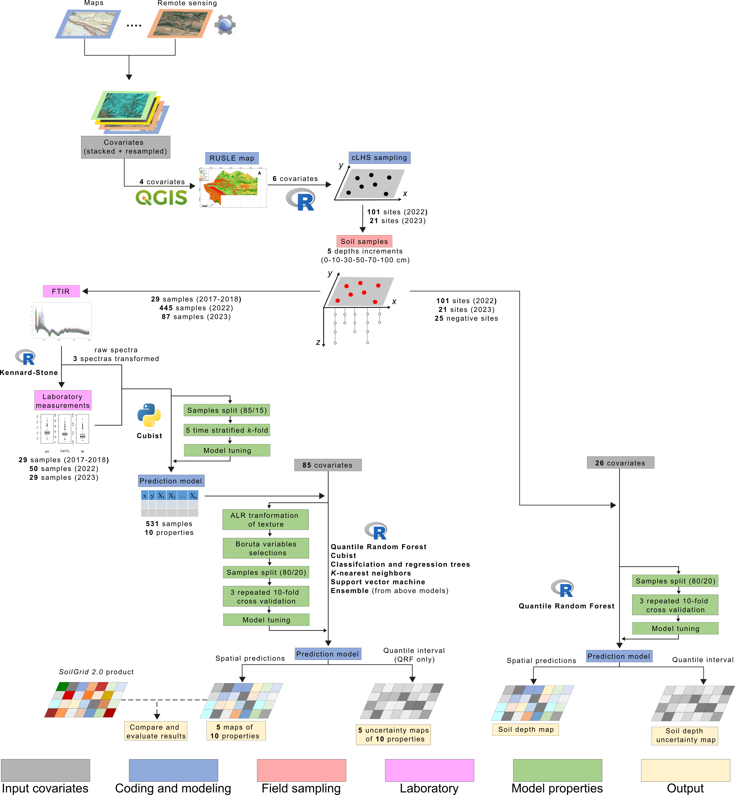

Soil information in Kurdistan region, Dohuk governorate (Iraq), supplementary material
2025-06-20
Preface


This is a complete description of the workflow related to the paper Soil information in Kurdistan region, Dohuk governorate (Iraq). It contains all the pre-processing steps of the subsequent stages and the data required to understand the entire process.

Authors:
Mathias Bellat, CRC1070 ResourceCultures, Department of Geosciences, Working group of Soil Science and Geomorphology, University of Tuebingen, Tuebingen, Germany, mathias.bellat@uni-tuebingen.de.
Nafiseh Kakhani, CRC1070 ResourceCultures, Department of Geosciences, Working group of Soil Science and Geomorphology, University of Tuebingen, Tuebingen, Germany, nafiseh.kakhani@uni-tuebingen.de.